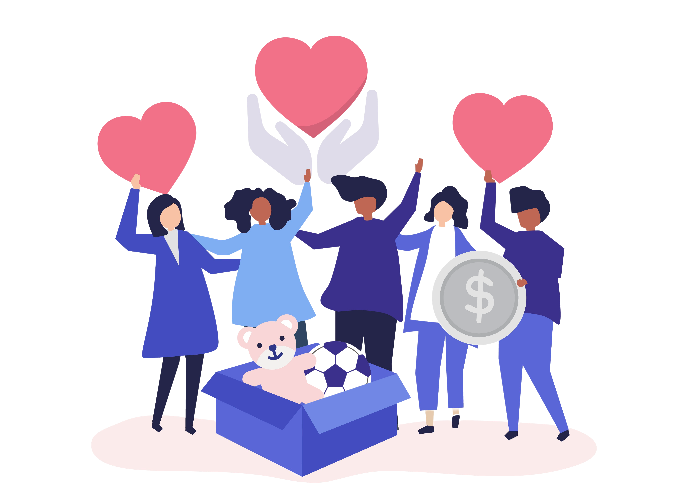
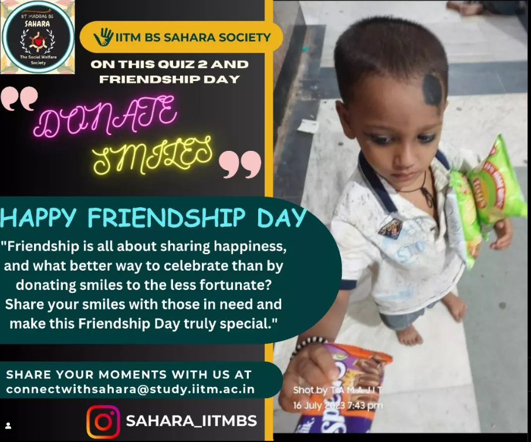
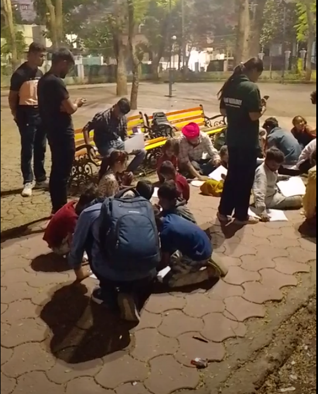

We are the Official Social Welfare Society of the IIT Madras BS Degree Program, dedicated to providing assistance to those in need and creating opportunities for willing hearts.
Our initiatives, including hands-on Offline Volunteering in etablished NGOs, engaging with social activists and innovative competitions, aim to make a meaningful impact.
With this, we foster essential skills such as leadership, effective social interactions, public speaking, and selflessness among our student community, contributing to our mission for social welfare causes.

Our Goals
Impacting Real lives
We're passionate about making a real difference in the world, not just in the virtual realm.
Through our dedication, vision, planning, and execution, we aim to reach out to those in need
and make a positive impact in their lives, no matter how big or small.

Spreading Awareness about Social Welfare
We believe in the power of knowledge to drive social change. Through our engaging content we aim to raise awareness about pressing social issues, foster discussions on social welfare topics, and celebrate the extraordinary efforts of social activists.

Conducting Social Welfare Activities
Encouraging students to step out, We offer our IITM BS students to get hands-on experience by
participating in Offline Social Welfare Activities, and gaining real-world experiences, learning
life skills by empowering lives of others.
Bridging the Gap Between Students and Needy ones
Sahara Society serves as a bridge between those wanting to contribute to social welfare. From
interactive sessions with social leaders like Mr. Robin Singh from Peepal Farm, we engage our
members in impactful activities by doing Social Welfare in real-life.
What We Do
Organize Offline Volunteering Social Welfare Activities
We partner with NGOs for impactful offline volunteering. This provides our online degree students with opportunities for in-person interactions, group travel, and exploration, all while contributing to social causes. Engage with real changemakers, witness NGO operations, and create lasting memories.
Conduct Guest sessions with Social Activists
We host online Q&A sessions with unsung heroes - Social Welfare Activists, Environmentalists, Influencers and Creators. These individuals dedicate their lives to creating positive change in India. Our community gains insights, inspiration, and answers to queries, fostering a spirit of selfless service and learning from real-life heroes.
Host Solution-based Competitions on Critial issues
We organize solution-focused competitions addressing social welfare causes, such as debates, art, posters, and writing contests. These events showcase our members' hidden talents while shedding light on critical issues. Participants not only highlight burning concerns but also get a platform to showcase their skills.
Share Content to spread Social Awareness
We consistently share content fostering morality, compassion, and humanity among our members. Our series, including Myth Buster and Health Tips, educates on diverse issues. The KYR (Know Your Revolutionary) series highlights NGOs, founders, and their contributions to social welfare, providing valuable insights and social media links.